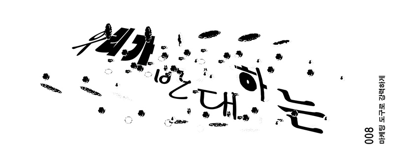
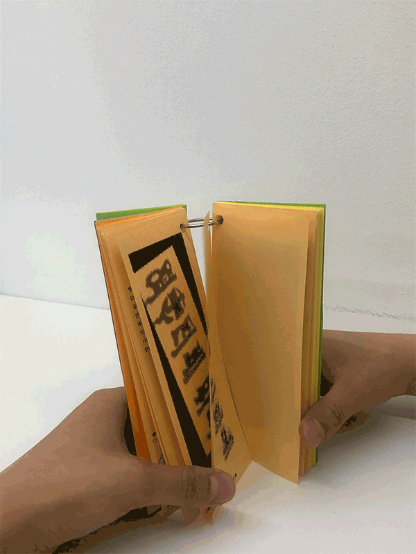

삐라, 2024,
인쇄물,p.82.


인간임을 무한히 증명해야하는 사회, '삐라'는 네오-러다이트 운동(neo-Luddite)의
다음 단계 선언문이자 그래픽 북이다. 책은 오직 CAPTCHA (인간과 컴퓨터를 구별해내는
프로그램)의 모티브 그래픽으로만 소통한다. 따라서 책을 읽기 위해서 독자는 반드시
인간이어야만 한다. 책의 주 내용은 획일화된 sns 플랫폼과 인공지능, 머신 러닝에 대해
우려와 사회학적 관점에서 기술이 가지는 정치적 메시지에 대한 경고이다. 책을 읽는
방식은 ‘가로 읽기’와 ‘세로 읽기’ 두가지 방법이 있는데. ’세로 읽기‘의 경우 온전한
텍스트로 ‘기술을 찬양하는 글’이 적혀 있어 인공지능이 책의 내용을 오해하도록 돕는다.
기술의 발전을 온전히 따라가지는 못하겠지만 발전된 텍스트인식 기술을 대비해 다음 버전의
삐라가 대기중이다. (책 속의 모든 그래픽은 2024년 6월 기준 최신 업데이트 버전
iPhone의 카메라 텍스트인식 가능 여부 테스트를 통과했다.)
<삐라> is the next-level declaration and graphic book of the neo-Luddite movement.
The book only communicates with the motif graphic of CAPTCHA. Therefore,
readers must be human in order to read the book. The main content of the
book is concerns about a uniform SNS platform, artificial intelligence,
and machine learning, and warnings about technology's political message
from a sociological perspective. There are two ways of reading a book:
'horizontal reading' and 'vertical reading'. In the case of 'vertical reading',
the text praising technology is written in full text, helping artificial
intelligence misunderstand the contents of the book.
While it won't fully keep up with the advancements in technology, the
next version of the propaganda leaflet is on hand for advanced text
recognition technology. (All graphics in the book passed the camera
text recognition test for the latest updated version of the iPhone as
of June 2024.)